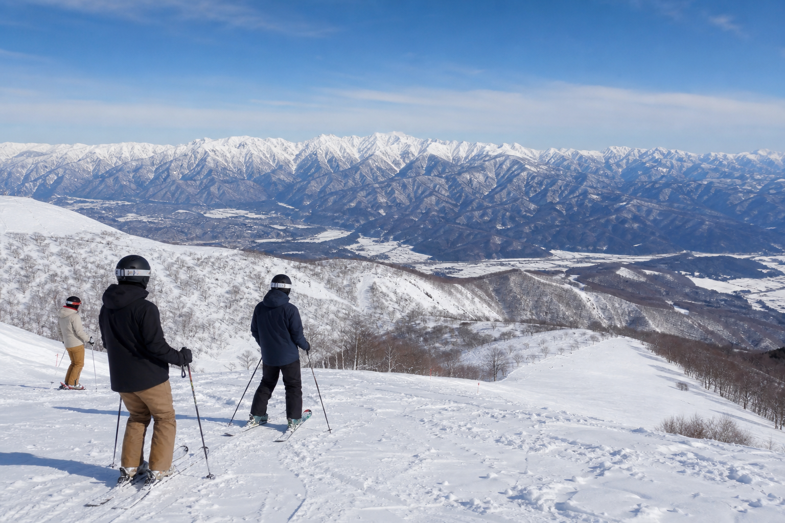
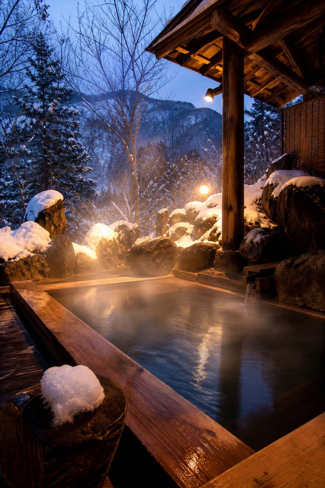

最長8kmのロングライド
総滑走面積220ha・16コース——スカイラインコースを含む国内屈指のスケール。山頂うさぎ平から北アルプス白馬三山を見渡す大パノラマの中、極上パウダーのロングクルーズを味わえます。
ゲレンデマップ付近の温泉
八方尾根麓に「八方の湯」「みみずくの湯」「おびなたの湯」が点在——日本屈指の強アルカリ性美肌の湯として、スキー後の定番リカバリー拠点です。
夕方はジャンプ競技場見学やスノーピーク ランドステーション白馬と組み合わせ、エリア回遊の一日に。
白馬周辺の温泉特集
Access
JR長野駅から車で約1時間4分（目安）
TEL 0261-72-3066